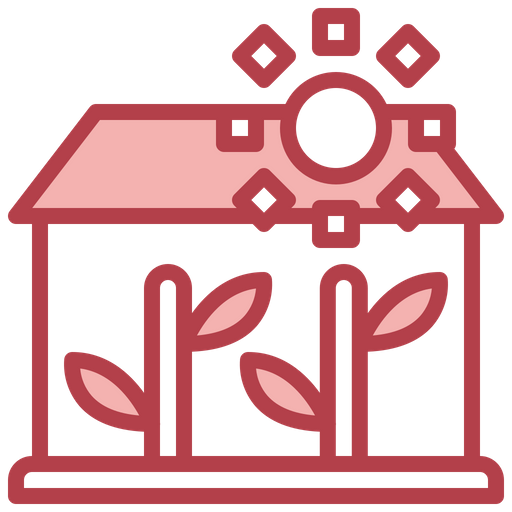

Types of Greenhouse
There are many types of greenhouses, with shapes suited for various plants and designs ranging from simple to involved. Here are a few things they have in common: Framing: Most greenhouses are made of lightweight frames that can hold up to normal weather, wear and tear. Frames are typically made of wood, metal or plastic PVC pipe. If you are designing and building a greenhouse (more on that below), wood is the sturdiest material and most resistant to wind damage. You will need to keep the wood sealed to prevent dry rot and be diligent about checking for termite infestation. Material: The insulating material, or what makes up the walls and roof of a greenhouse, is transparent or semi-transparent, usually glass, polycarbonate, acrylic or fiberglass.Foundation: This should be made of an impermeable material that keeps out water and insects and can anchor the walls. Poured concrete and wood are among the best options. Pre-made greenhouse kits may come with metal floors. For a money-saving option, spread gravel over a porous ground cover that blocks weeds but allows for drainage. Your greenhouse can be a freestanding structure or attached to the exterior wall of another building, like the back of the house or a garage wall. These are called lean-to greenhouses.
Thing You will need Greenhouse Gardening
Space and permits: How much backyard space can you devote to a greenhouse? Remember, the larger you go, the more equipment you will need, from shelving to heaters to watering systems. You may need a local permit to install a greenhouse, especially if it is a permanent structure.Types of plants: “Whether you are growing tropical plants or vegetables,” says Hachadourian, “the greenhouse design and settings will be determined by the type of plants you wish to cultivate.”Heat: If you can rely on year-round sunshine to warm your garden, great. Otherwise, you will need to install one or more heaters to maintain healthy temperatures for your plants. And unless you are willing to turn them on and off as needed (and risk forgetting to do either), you will need an automated heating system to control the temperature on a set schedule.Air circulation: If air can not move in your greenhouse, your plants will fall victim to excessive heat and disease. That means manually opening and closing windows or vents as necessary, or setting automatic vents on a timer.Water and humidity: You will need a system for watering your greenhouse plants. That may be as simple as dragging in a hose. Or you may want to install a spigot, irrigation system or even an overhead sprinkler system.